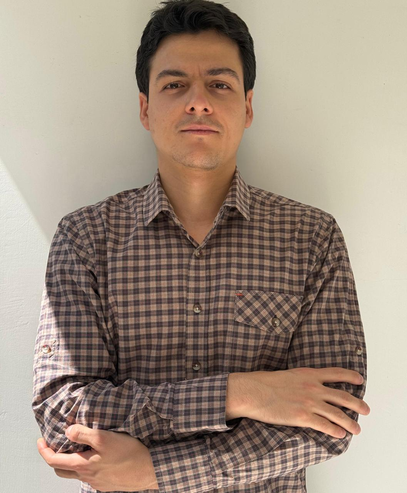

Commodity Export Dependence and Political Polarization in Latin America: The Moderating Role of Economic Complexity
Under review
Political Science · Comparative Politics
PhD Student, Department of Political Science
University of Wisconsin–Milwaukee

I study informational state capacity and public opinion in Latin America.
My research uses a multi-method approach that combines statistical analysis of observational data, experimental methods, and qualitative research.
Before beginning the PhD, I completed an M.A. in Social Sciences at the Facultad Latinoamericana de Ciencias Sociales (FLACSO, Mexico) and a B.A. in Political Science at Universidad del Tolima (Colombia).
Under review
In progress
In progress
With John Kelly Bonilla · In progress
With Agustín Goenaga · In progress
Paola Ruiz Flores López, Óscar Sánchez Hiza, Daniel Zizumbo-Colunga, Rafael Cruz Lathrop, and Juan Camilo Vásquez Salazar.
Drugs: Education, Prevention and Policy.
María Cristina Ovalle Almanza and Juan Camilo Vásquez Salazar.
Colombia Internacional, 111, 111–133.
Juan Camilo Vásquez Salazar and María Cristina Ovalle Almanza.
Análisis Político, 33(99), 3–23.
Teaching Assistant · University of Wisconsin–Milwaukee
Kennan Ferguson · Fall 2026
Teaching Assistant · IPSA–FLACSO Mexico Summer School
Rosario Aguilar · Summer 2026
Conference on Experimental Methods Applied to Security and Defense, Higher War School “General Rafael Reyes Prieto” (ESDEG–Colombia).
Panel on Economic Shock, Economic Complexity, and Political Polarization in Latin America, Latin American Studies Association Congress.
Research Seminar on Populism and Public Opinion in Latin America, FLACSO Mexico.
Chancellor’s Award, University of Wisconsin–Milwaukee.
Travel Grant, Latin American Studies Association Congress.
Consejo Nacional de Ciencia y Tecnología (Conacyt), Mexico.
Junior Research, Ministerio de Ciencia, Tecnología e Innovación, Colombia.
#LabData · 2024
Office
Bolton Hall 652
3210 N. Maryland Ave.
Milwaukee, WI 53211
Profiles